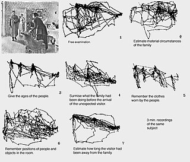
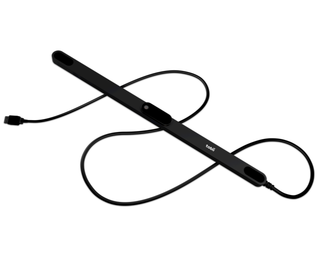
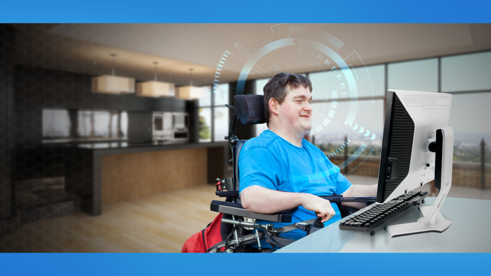

Introduccion
Un Eye Tracker o rastreador ocular es un dispositivo que permite medir y registrar las posiciones y movimientos de los ojos para analizar patrones visuales y cognitivos del usuario en tiempo real. Esta tecnología, que generalmente usa cámaras y sensores de alta precisión, captura la dirección y la duración de la mirada permitiendo así que los usuarios puedan interactuar con dispositivos sin necesidad de utilizar sus manos ideal para personas con discapacidades o en aplicaciones donde las manos están ocupadas
El rastreo ocular también es útil en investigaciones de neurociencia psicología marketing y usabilidad debido a su capacidad para revelar cómo los individuos procesan visualmente la información
La empresa sueca Tobii Dynavox es reconocida mundialmente como una de las principales en el desarrollo de dispositivos de rastreo ocular desde 2002 cuando lanzó su primer Eye Tracker, donde ha ido evolucionando de manera constante perfeccionando su tecnología y ampliando las aplicaciones de sus dispositivos en el campo de la accesibilidad y la investigación.
Su último modelo, el Tobii Eye Tracker 5 integra tecnología avanzada para seguir tanto los movimientos de los ojos como los de la cabeza con una precisión increíble. Este dispositivo permite una experiencia de interacción más intuitiva y es ideal para usuarios que necesitan controlar dispositivos con la mirada
Imagen sacada de https://es.aliexpress.com/i/1005005306248165.html
La historia del Eye Tracker
El estudio del movimiento de los ojos se remonta al s.XIX, donde el oftalmologo francés Louis Émile Javal, se percató de que las personas no leían de manera continua, sino que hacían una especie de movimientos rápidos llamados sacados.
El primer dispositivo de este tipo, se registra como un mecanismo de lentes de contacto, creado por Edmund Huey, permitiendo ayudarle en la creación de patrones de lectura (1908).
En los años 50, el avance en la tecnologías ópticas permitieron la creación de un rastreador ocular que utilizaban luces infrarrojas pare reflejarse en los ojos y cámaras que registraban los movimientos.
Entre los años 80 y 90 con la evolución tecnológica se empezaron a usar dispositivos haciéndolos más accesibles y precisos. Esta tecnología se usó y se utiliza actualemente con el fin de analizar cómo las personas interactuaban con sitios webs, anuncios...
Actualmente, el sistema es mucho más sofisticado, y cuenta en algunos casos con la implementación de Inteligencia Artificial. Compañías como Tobii, Gazepoint han implementado este eye tracking en videojuegos, educación, medicina... y sbore todo enfocado en la asistencia de personas con discapacidades.
Imagen sacada de https://www.researchgate.net/figure/a-Estudio-del-movimiento-ocular-sobre-el-cuadro-El-visitante-inesperado-pintura-al_fig4_366780645
Imagen sacada de https://www.amazon.es/Tobii-Eye-Tracker-5/dp/B0897GCBWW
Ventajas y beneficios
El Tobii Eye Tracker 5 permite a personas con discapacidades motoras usar los ojos como un medio para controlar dispositivos como ordenadores y tablets, abriendo posibilidades para trabajar, comunicarse, estudiar, o disfrutar del entretenimiento.
Este modelo va más allá de los usos en accesibilidad, integrándose en el ámbito de los videojuegos para mejorar la experiencia inmersiva al captar tanto los movimientos oculares como los de la cabeza con gran precisión y una baja latencia, lo que permite realizar acciones en tiempo real en el juego, como enfocar o interactuar con elementos al mirar en una dirección específica, proporcionando una interaccion intuitiva y fluida para los jugadores.
Además, el Tobii Eye Tracker 5 es utilizado en estudios de UX (experiencia de usuario) y en marketing para analizar cómo los usuarios interactúan visualmente con las interfaces, ayudando a mejorar el diseño de productos y páginas web. En educación y formación profesional, este dispositivo es útil para captar la atención y el enfoque de los estudiantes o entrenar a profesionales en áreas como el manejo de maquinaria o simulaciones médicas, brindando datos precisos que optimizan los procesos de aprendizaje e instrucción.
Imagen sacada de https://beam.eyeware.tech/es/disabled-gamers-level-up-head-eye-tracker/
Descubre más
Páginas de interés
Comprar Tobii Eye Tracker 5 | Más información | Ver gama de Eye Trackers de Tobii | Otros Eye Trackers